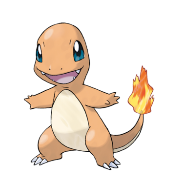

Pokemon Attack Type Effectiveness Against Charmander

Attack Type Effectiveness is...
Hover below to learn about that attack type versus Charmander
Water Attack
Normal Attack
Grass Attack
Back to Landing Page